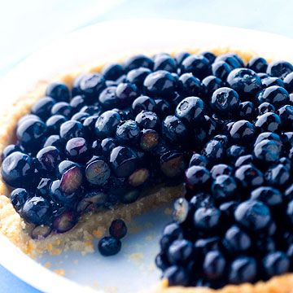

Mom's Blueberry Pie

This is my mom's blueberry pie recipe. It is a tradition among our family. It's a
candied blueberry filling atop a custard base. The crust is similar to a traditional key
lime pie crust, but it is made from vanilla wafers instead. I hope you enjoy!
Ingredients:(These Serve as Placeholders)
2 cups fresh blueberries (or frozen, thawed)
¼ tsp ground cinnamon (optional)
1 tbsp butter, cut into small pieces
1 package of store-bought pie crusts
1 tbsp milk (for egg wash)
Steps: (These Serve as Placeholders)
Preheat the oven to 400°F (200°C).
Preheat the filling in a large bowl, combine blueberries, sugar,
cornstarch, lemon juice, cinnamon, and salt. Gently toss to mix, ensuring the blueberries
are evenly coated.
Roll out the crust and place one of the pie crusts into a 9-inch pie dish.
Press it firmly into the dish, trimming any excess around the edges.
Add the filling by pouring the blueberry mixture into the prepared pie crust.
Dot the filling with small pieces of butter.
Top the pie so roll out the second pie crust and place it over the blueberries.
You can either place it as a whole sheet or cut it into strips for a lattice top. Seal the
edges by crimping them together.
Please visit ChatGPT for the remainder of the instructions.
Home